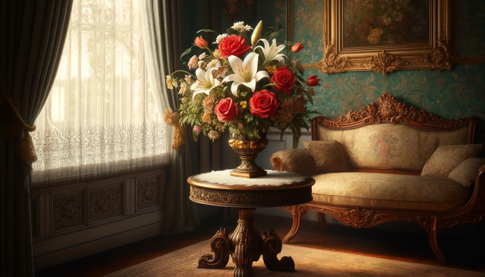
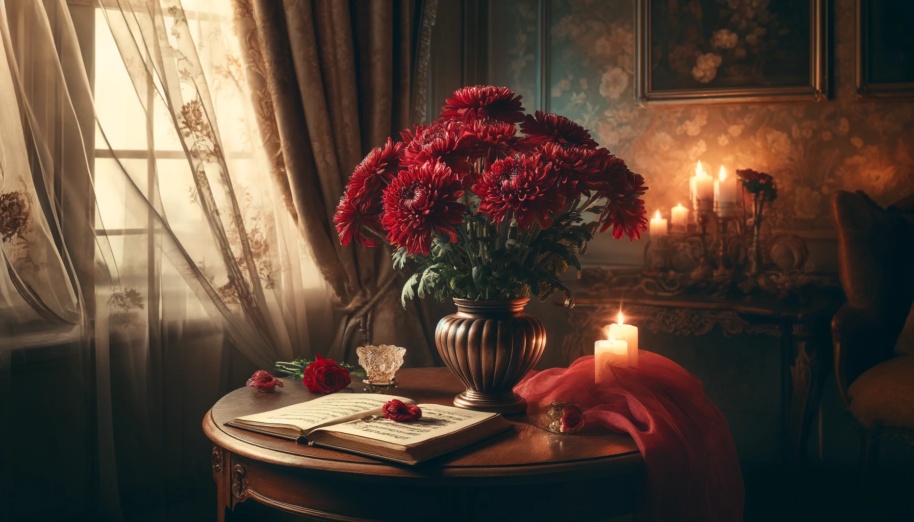
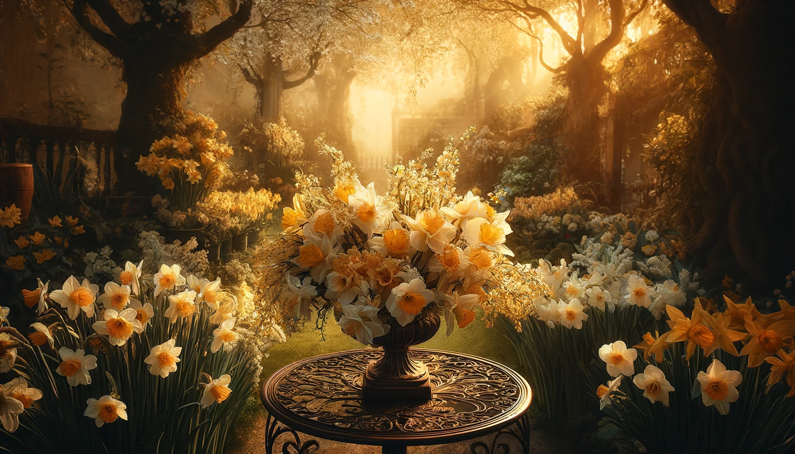

The Language of Flowers: What Bouquet Can Really Say
Published on April 19, 2024 | Hiyas Flowershop
The language of flowers, or floriography, is an eloquent form of communication that uses various floral arrangements to convey specific messages. This tradition dates back to the Victorian era, where flowers were used to send coded messages, allowing individuals to express feelings that could not be spoken aloud in society. Each type of flower, and often its color, carries a distinct meaning. Here's an exploration of the symbolic meanings of three popular flowers and what messages they can convey in a bouquet:

Chrysanthemums
Chrysanthemums symbolize loyalty and honesty. However, the color of the chrysanthemum can alter its meaning: red chrysanthemums convey love, white ones symbolize truth and loyal love, and yellow ones signify slighted love.

Daffodils
Daffodils are indicative of new beginnings, rebirth, and eternal life. These flowers are often associated with spring and are considered to herald the end of winter, bringing a message of hope and renewal. A bouquet of daffodils can express wishes for happiness and is believed to bring good fortune.

Violets
Violets typically signify modesty, humility, and faithfulness. They can also convey the message to take a chance on happiness. Dark purple violets especially are symbols of deep love and thoughts filled with admiration.